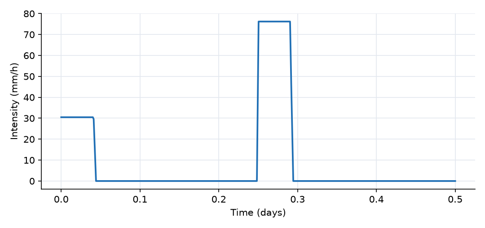
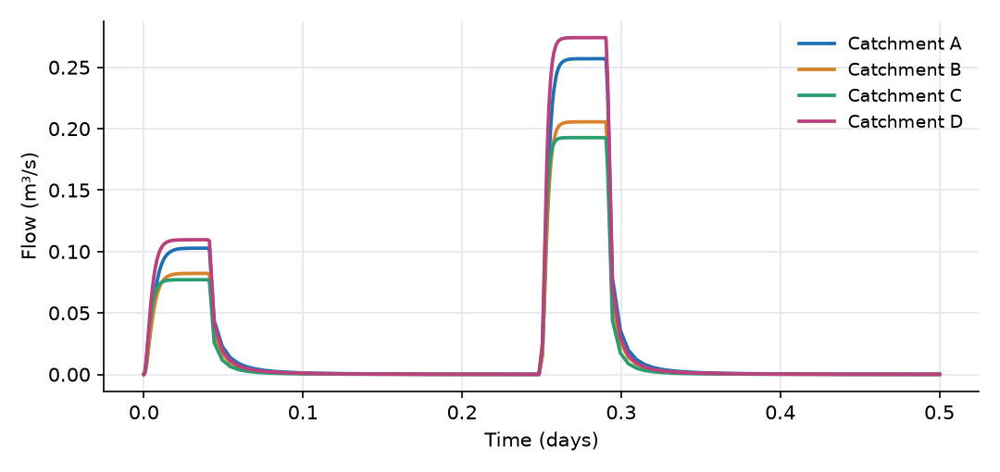
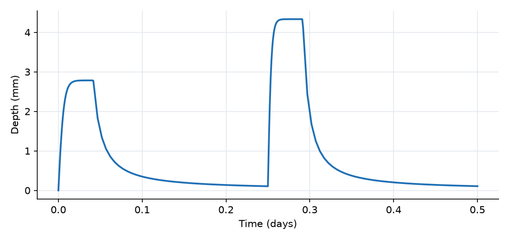
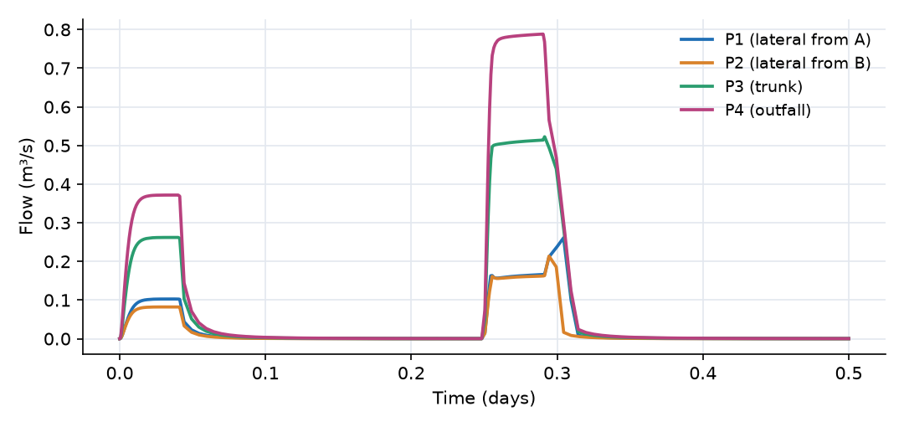
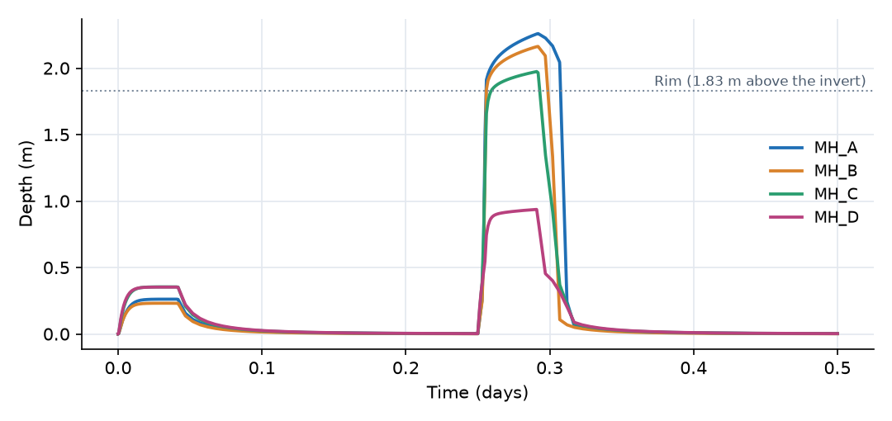
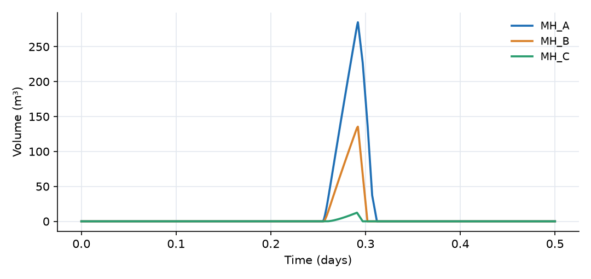

What this model represents
A small urban storm sewer: four catchments (two residential, two commercial, 6.27 ha in total) drain through catch basins into a branched pipe network. Two 0.381 m (15 in) laterals start at manholes MH_A and MH_B and meet at MH_C; a 0.533 m (21 in) trunk carries the water to MH_D, and a 0.610 m (24 in) outfall pipe discharges to a creek. The pipes were sized with the Rational method for a 2-year storm of 30.5 mm/h (1.2 in/hr), each running about 80 % of its full-pipe capacity.
The same 12-hour run first applies that 2-year storm and then, six hours later, a 100-year storm of 76.2 mm/h (3.0 in/hr). The first passes through the pipes. The second surcharges them: water rises in the manholes, spills over three of the rims, ponds on the street, and drains back once the rain stops. The example shows how the Catchment (MRM) block reproduces the Rational method, how pipe capacity limits a sewer, and where a network floods first. The model is the one built in the OpenHydroQual video tutorial on storm sewer networks (designed in US customary units; the US values are given in parentheses).
How it works
Catchment (MRM) blocks: a nonlinear reservoir. Each catchment stores a thin film of water on its surface, with depth d = Storage/A (A is the catchment area). The precipitation source adds the rain over the area; the block keeps the fraction C (the runoff coefficient) and removes the rest as a loss:
effective inflow = C·i·A, loss = (1 − C)·i·A
where i is the rain intensity. The Catchment outlet (MRM) link drains the film (flow in m³/day, lengths in m):
Q = (A / L) · γ · S^0.28 · (d − d_s)^(1+m), γ = (1440/0.31)^(1+m)
with L the flow path length, S the slope, d_s the depression storage (0 here) and m = 1.07 the nonlinearity exponent, so the outflow grows with the film depth to the power 2.07. The storage changes as dStorage/dt = C·i·A − Q. During a storm longer than the catchment's response time the film thickens until Q = C·i·A, which is the Rational method peak. Setting the two equal gives the equilibrium film depth
d = (C·i·A·L / (A·γ·S^0.28))^(1/2.07)
The time to approach it plays the role of the time of concentration. It is longer for a long, flat catchment, and shorter for heavier rain, because a deeper film drains faster: catchment A reaches 95 % of C·i·A after 21 minutes in the 2-year storm and after 13.5 minutes in the 100-year storm.
Catch basins. A Catch basin stores water over its base area A_b up to its rim height h_r (Storage/A_b below the rim). Above the rim the excess spreads over the street as an inverted square pyramid with side slope s: the flooded area beyond the basin is (√A_b + 2·s·h_f)² − A_b for a flood depth h_f above the rim. The hydraulic head is the bottom elevation plus the depth, and it drives the pipes.
Sewer pipes. The Sewer pipe link computes Manning flow between two heads (flow in m³/day):
Q = 86400 · (1/n) · √(Δh/L) · A_eff · R^(2/3), Δh = max(H_s, z_s) − max(H_e, z_e)
where H_s and H_e are the heads at the upstream and downstream manholes, z_s and z_e the pipe inverts, and L the pipe length. The flow depth at each end is the head above the invert, capped at the diameter; the flowing area and wetted perimeter come from polynomial fits of the circular section, weighted toward the upstream end. With a free outfall Δh is the upstream depth plus the drop in invert. When the pipe flows full, A_eff = πD²/4 and Δh is the difference in hydraulic grade line between the manholes, which can exceed the pipe slope times its length: a surcharged pipe carries more than its full-pipe capacity on its own slope.
Network. Each catchment outlet enters its catch basin; the pipes connect the basins, and P4 ends at the fixed-head Creek, which sits below the outfall invert. Flows are positive in the drawn direction (upstream to downstream); a pipe reverses only if the downstream head rises above the upstream one.
What to look for in the results
- Rational method. In the 2-year storm each catchment levels off at C·i·A: Catchment_A at 0.6 × 30.5 mm/h × 2.02 ha = 0.103 m³/s (3.63 cfs). The pipe flows are the sums upstream: P3 carries 0.262 m³/s (A + B + C) and P4 0.372 m³/s (13.1 cfs), matching i·ΣCA.
- Film depth. Catchment A holds 2.78 mm (0.110 in) of water at equilibrium in the 2-year storm and 4.33 mm (0.171 in) in the 100-year storm, the depths given by the equilibrium equation above.
- Pipe capacity. Full-pipe Manning capacity on the 0.005 slope is 0.129 m³/s (4.57 cfs) for the 0.381 m laterals, 0.317 m³/s for P3 and 0.453 m³/s for P4. The 2-year flows use about 80 % of it; the pipes run about two-thirds full.
- Surcharge. In the 100-year storm Catchment_A delivers 0.257 m³/s to MH_A, twice what P1 can carry on its slope. The water rises in MH_A until the head difference to MH_C drives about 0.165 m³/s through the full pipe, and the rest rises over the rim.
- Street flooding. MH_A floods 0.43 m (17 in) above the rim with up to 285 m³ (10,100 ft³) on the street, about the 100-year runoff minus the pipe flow integrated over the hour of rain. MH_B and MH_C flood less, and MH_D does not flood. After the rain, MH_C drains first, the head difference across P1 grows, and P1 briefly carries more than during the storm while the street empties.
- Water balance. The volume through the outfall equals the runoff (C × rain × area) of both storms to within about 1 %.
Assumptions and limitations
- Runoff is a fixed fraction C of the rain: there is no infiltration model, no initial abstraction and no depression storage.
- Each catchment is one reservoir with uniform rain; there is no gutter or overland routing between catchments, and ponded street water stays at its own catch basin (it does not flow along the street to the next one; see the Dual Drainage example for that).
- Pipes carry no storage of their own (the catch basins hold the water), and inertia is neglected: the pipe flow follows Manning's equation on the head difference at every step. Entrance and exit losses at the manholes are not modeled.
- The circular-section area and wetted perimeter come from polynomial fits; at full flow the fitted wetted perimeter is about 2.99·D, slightly less than π·D, so the full-pipe flow is about 3 % higher than the exact Manning value.
- The creek level is fixed and below the outfall, so there is no tailwater effect.
- Rain depths in rainfall.csv are in meters, the unit OpenHydroQual uses for precipitation files.
Model diagram
Hover a block or link to see its name and type. Arrows show the positive flow direction.
Components
Click a component to see every property set in the model file, with units and meaning.
Blocks 9
Storage compartments: each holds water (and dissolved or particulate mass) and has a state that evolves in time.
Catchment_ACatchment_MRM · Sewer_systemResidential catchment, 2.02 ha (5 ac), runoff coefficient C = 0.6, flow path 152.4 m (500 ft), slope 0.02. Drains to MH_A at the head of the first lateral.
Catchment_MRM: Catchment (MRM)
| Property | Value | Unit | Meaning |
|---|---|---|---|
| Precipitation | Rain | m^3/day | A precipitation source object must be selected. |
| Catchment area | 20234.3 | m2 | Total horizontal surface area of the catchment. Used to compute initial storage and flow-related parameters. |
| Runoff coefficient | 0.6 | This is the fraction of rain that converts to runoff in case infiltration is not explicitly modeled | |
| Flow path length | 152.40 | m | Maximum flow path length |
| Catchment slope in the direction of flow | 0.02 | The average slope of the catchment along the dominant flow direction | |
| Mean elevation of the catchment | 0 | m | The elevation of the centroid of the catchment based on the model datum. |
| Depression storage | 0 | m | The depth of water that is retained in surface depressions and does not contribute to surface runoff. |
| Average water depth | 0 | m | The initial depth of the standing water before the simulation start time. Most of the times, this value is zero |
| Loss coefficient | 0 | 1/day | A coefficient representing losses (e.g., infiltration or leakage) as a first-order rate constant. Used in loss expression. |
MH_ACatch basin · Sewer_systemCatch basin (manhole) at the head of lateral P1: 0.93 m² (10 ft²) base, invert 3.048 m (10 ft), 1.83 m (6 ft) deep to the rim. Above the rim the water spreads on the street (side slope 50).
Catch basin: Catch Basin
| Property | Value | Unit | Meaning |
|---|---|---|---|
| Base Area | 0.9290 | m2 | Base Area (user input required). |
| Bottom Elevation | 3.0480 | m | Bottom Elevation (user input required). |
| Maximum height (rim) | 1.8288 | m | Height of the rim above the bottom. Below it the basin is a prism of the base area; above it the plan area grows as an inverted square pyramid of side slope spread_side_slope (water spreading over the surroundings). The default (1e12) keeps the basin a prism of unlimited height. |
| Side slope above the rim (horizontal/vertical) | 50 | Above max_height the side of the square section grows by 2*spread_side_slope per unit rise: A(e) = (sqrt(area) + 2*spread_side_slope*e)^2 at height e above the rim. 0 keeps the base area (a prism). |
Catchment_BCatchment_MRM · Sewer_systemResidential catchment, 1.62 ha (4 ac), C = 0.6, flow path 121.9 m (400 ft), slope 0.02. Drains to MH_B at the head of the second lateral.
Catchment_MRM: Catchment (MRM)
| Property | Value | Unit | Meaning |
|---|---|---|---|
| Precipitation | Rain | m^3/day | A precipitation source object must be selected. |
| Catchment area | 16187.4 | m2 | Total horizontal surface area of the catchment. Used to compute initial storage and flow-related parameters. |
| Runoff coefficient | 0.6 | This is the fraction of rain that converts to runoff in case infiltration is not explicitly modeled | |
| Flow path length | 121.92 | m | Maximum flow path length |
| Catchment slope in the direction of flow | 0.02 | The average slope of the catchment along the dominant flow direction | |
| Mean elevation of the catchment | 0 | m | The elevation of the centroid of the catchment based on the model datum. |
| Depression storage | 0 | m | The depth of water that is retained in surface depressions and does not contribute to surface runoff. |
| Average water depth | 0 | m | The initial depth of the standing water before the simulation start time. Most of the times, this value is zero |
| Loss coefficient | 0 | 1/day | A coefficient representing losses (e.g., infiltration or leakage) as a first-order rate constant. Used in loss expression. |
MH_BCatch basin · Sewer_systemCatch basin at the head of lateral P2: same size, invert 2.941 m (9.65 ft).
Catch basin: Catch Basin
| Property | Value | Unit | Meaning |
|---|---|---|---|
| Base Area | 0.9290 | m2 | Base Area (user input required). |
| Bottom Elevation | 2.9413 | m | Bottom Elevation (user input required). |
| Maximum height (rim) | 1.8288 | m | Height of the rim above the bottom. Below it the basin is a prism of the base area; above it the plan area grows as an inverted square pyramid of side slope spread_side_slope (water spreading over the surroundings). The default (1e12) keeps the basin a prism of unlimited height. |
| Side slope above the rim (horizontal/vertical) | 50 | Above max_height the side of the square section grows by 2*spread_side_slope per unit rise: A(e) = (sqrt(area) + 2*spread_side_slope*e)^2 at height e above the rim. 0 keeps the base area (a prism). |
Catchment_CCatchment_MRM · Sewer_systemCommercial catchment, 1.01 ha (2.5 ac), C = 0.9, flow path 79.2 m (260 ft), slope 0.01. Drains to MH_C, where the two laterals meet.
Catchment_MRM: Catchment (MRM)
| Property | Value | Unit | Meaning |
|---|---|---|---|
| Precipitation | Rain | m^3/day | A precipitation source object must be selected. |
| Catchment area | 10117.1 | m2 | Total horizontal surface area of the catchment. Used to compute initial storage and flow-related parameters. |
| Runoff coefficient | 0.9 | This is the fraction of rain that converts to runoff in case infiltration is not explicitly modeled | |
| Flow path length | 79.25 | m | Maximum flow path length |
| Catchment slope in the direction of flow | 0.01 | The average slope of the catchment along the dominant flow direction | |
| Mean elevation of the catchment | 0 | m | The elevation of the centroid of the catchment based on the model datum. |
| Depression storage | 0 | m | The depth of water that is retained in surface depressions and does not contribute to surface runoff. |
| Average water depth | 0 | m | The initial depth of the standing water before the simulation start time. Most of the times, this value is zero |
| Loss coefficient | 0 | 1/day | A coefficient representing losses (e.g., infiltration or leakage) as a first-order rate constant. Used in loss expression. |
MH_CCatch basin · Sewer_systemJunction catch basin where P1 and P2 meet and P3 starts: invert 2.377 m (7.8 ft).
Catch basin: Catch Basin
| Property | Value | Unit | Meaning |
|---|---|---|---|
| Base Area | 0.9290 | m2 | Base Area (user input required). |
| Bottom Elevation | 2.3774 | m | Bottom Elevation (user input required). |
| Maximum height (rim) | 1.8288 | m | Height of the rim above the bottom. Below it the basin is a prism of the base area; above it the plan area grows as an inverted square pyramid of side slope spread_side_slope (water spreading over the surroundings). The default (1e12) keeps the basin a prism of unlimited height. |
| Side slope above the rim (horizontal/vertical) | 50 | Above max_height the side of the square section grows by 2*spread_side_slope per unit rise: A(e) = (sqrt(area) + 2*spread_side_slope*e)^2 at height e above the rim. 0 keeps the base area (a prism). |
Catchment_DCatchment_MRM · Sewer_systemMixed commercial catchment, 1.62 ha (4 ac), C = 0.8, flow path 100.6 m (330 ft), slope 0.01. Drains to MH_D on the trunk.
Catchment_MRM: Catchment (MRM)
| Property | Value | Unit | Meaning |
|---|---|---|---|
| Precipitation | Rain | m^3/day | A precipitation source object must be selected. |
| Catchment area | 16187.4 | m2 | Total horizontal surface area of the catchment. Used to compute initial storage and flow-related parameters. |
| Runoff coefficient | 0.8 | This is the fraction of rain that converts to runoff in case infiltration is not explicitly modeled | |
| Flow path length | 100.58 | m | Maximum flow path length |
| Catchment slope in the direction of flow | 0.01 | The average slope of the catchment along the dominant flow direction | |
| Mean elevation of the catchment | 0 | m | The elevation of the centroid of the catchment based on the model datum. |
| Depression storage | 0 | m | The depth of water that is retained in surface depressions and does not contribute to surface runoff. |
| Average water depth | 0 | m | The initial depth of the standing water before the simulation start time. Most of the times, this value is zero |
| Loss coefficient | 0 | 1/day | A coefficient representing losses (e.g., infiltration or leakage) as a first-order rate constant. Used in loss expression. |
MH_DCatch basin · Sewer_systemCatch basin on the trunk, upstream of the outfall pipe: invert 1.524 m (5.0 ft).
Catch basin: Catch Basin
| Property | Value | Unit | Meaning |
|---|---|---|---|
| Base Area | 0.9290 | m2 | Base Area (user input required). |
| Bottom Elevation | 1.5240 | m | Bottom Elevation (user input required). |
| Maximum height (rim) | 1.8288 | m | Height of the rim above the bottom. Below it the basin is a prism of the base area; above it the plan area grows as an inverted square pyramid of side slope spread_side_slope (water spreading over the surroundings). The default (1e12) keeps the basin a prism of unlimited height. |
| Side slope above the rim (horizontal/vertical) | 50 | Above max_height the side of the square section grows by 2*spread_side_slope per unit rise: A(e) = (sqrt(area) + 2*spread_side_slope*e)^2 at height e above the rim. 0 keeps the base area (a prism). |
Creekfixed_headFixed-head boundary for the receiving creek, water level 0.762 m (2.5 ft), below the outfall invert, so the sewer discharges freely.
fixed_head: Fixed-head boundary
| Property | Value | Unit | Meaning |
|---|---|---|---|
| Initial Storage | 100000 | m3 | |
| Head | 0.7620 | m |
Links 8
Connections that move water (and the mass it carries) between blocks.
Runoff_ACatchment_link_MRM · Sewer_systemCatchment outlet (MRM) link from Catchment_A to MH_A. All four Runoff links follow the same outlet equation (see How it works).
Catchment_link_MRM: Catchment outlet (MRM)
Runoff_BCatchment_link_MRM · Sewer_systemCatchment outlet (MRM) link from Catchment_B to MH_B.
Catchment_link_MRM: Catchment outlet (MRM)
Runoff_CCatchment_link_MRM · Sewer_systemCatchment outlet (MRM) link from Catchment_C to MH_C.
Catchment_link_MRM: Catchment outlet (MRM)
Runoff_DCatchment_link_MRM · Sewer_systemCatchment outlet (MRM) link from Catchment_D to MH_D.
Catchment_link_MRM: Catchment outlet (MRM)
P1Sewer_pipe · Sewer_systemLateral sewer pipe MH_A to MH_C: 0.381 m (15 in) diameter, 121.9 m (400 ft) long, inverts 3.048 to 2.438 m (slope 0.005), Manning n = 0.013.
Sewer_pipe: Sewer pipe
| Property | Value | Unit | Meaning |
|---|---|---|---|
| Diameter | 0.3810 | m | Diameter (user input required). |
| Manning's roughness coefficient | 0.013 | m | Manning's roughness coefficient (user input required). |
| Pipe length | 121.92 | m | Pipe length (user input required). |
| Start elevation | 3.0480 | m | Start elevation (user input required). |
| End elevation | 2.4384 | m | End elevation (user input required). |
P2Sewer_pipe · Sewer_systemLateral sewer pipe MH_B to MH_C: 0.381 m (15 in), 100.6 m (330 ft), slope 0.005, n = 0.013.
Sewer_pipe: Sewer pipe
| Property | Value | Unit | Meaning |
|---|---|---|---|
| Diameter | 0.3810 | m | Diameter (user input required). |
| Manning's roughness coefficient | 0.013 | m | Manning's roughness coefficient (user input required). |
| Pipe length | 100.58 | m | Pipe length (user input required). |
| Start elevation | 2.9413 | m | Start elevation (user input required). |
| End elevation | 2.4384 | m | End elevation (user input required). |
P3Sewer_pipe · Sewer_systemTrunk sewer pipe MH_C to MH_D: 0.533 m (21 in), 152.4 m (500 ft), slope 0.005, n = 0.013.
Sewer_pipe: Sewer pipe
| Property | Value | Unit | Meaning |
|---|---|---|---|
| Diameter | 0.5334 | m | Diameter (user input required). |
| Manning's roughness coefficient | 0.013 | m | Manning's roughness coefficient (user input required). |
| Pipe length | 152.40 | m | Pipe length (user input required). |
| Start elevation | 2.3774 | m | Start elevation (user input required). |
| End elevation | 1.6154 | m | End elevation (user input required). |
P4Sewer_pipe · Sewer_systemOutfall pipe MH_D to Creek: 0.610 m (24 in), 100.6 m (330 ft), slope 0.005, n = 0.013.
Sewer_pipe: Sewer pipe
| Property | Value | Unit | Meaning |
|---|---|---|---|
| Diameter | 0.6096 | m | Diameter (user input required). |
| Manning's roughness coefficient | 0.013 | m | Manning's roughness coefficient (user input required). |
| Pipe length | 100.58 | m | Pipe length (user input required). |
| Start elevation | 1.5240 | m | Start elevation (user input required). |
| End elevation | 1.0211 | m | End elevation (user input required). |
Sources 1
External inputs or sinks applied to blocks: rainfall, evaporation, loads, exchange with the atmosphere.
RainPrecipitationRainfall applied to all four catchments: a 1-hour block of 30.5 mm/h (1.2 in/hr, a 2-year storm) from hour 0 to 1, and a 1-hour block of 76.2 mm/h (3.0 in/hr, a 100-year storm) from hour 6 to 7.
Precipitation: Precipitation
| Property | Value | Unit | Meaning |
|---|---|---|---|
| Precipitation Cumulative | rainfall.csv | m |
Input files
rainfall.csv | Rain depth per 1-minute interval over 12 hours. Three columns, no header: interval start (day), interval end (day), depth in the interval (m). 0.508 mm per minute from hour 0 to 1 and 1.27 mm per minute from hour 6 to 7, zero otherwise. Synthetic design storms. |
Simulation settings
| Start time | 0 |
| End time | 0.5 |
| Initial time step | 0.0001 |
| Write interval (steps) | 100 |
| Newton-Raphson tolerance | 0.001 |
Results
Produced by running the downloaded model unchanged.





